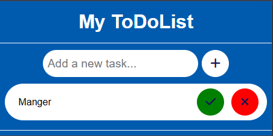
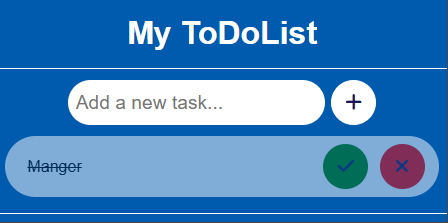

IxoTODoList est une extension Chrome conçue pour garder l’essentiel toujours à portée de main. Elle permet de visualiser rapidement les tâches à effectuer, directement depuis le navigateur, sans avoir à ouvrir d’application externe. Simple, pratique et efficace, IxoTODoList accompagne l’utilisateur au quotidien pour mieux s’organiser et rester concentré sur l’essentiel.
#0A89ED
#005BAE
#FFFFFF
Ixo TODOLIST est une extension Chrome conçue comme un projet d’apprentissage, avec pour objectif de comprendre les bases de la création d’une extension de navigateur. Le choix s’est porté sur une to-do list simple, rapide et intuitive, permettant d’ajouter et de consulter ses tâches en quelques clics. Ce projet met l’accent sur l’essentiel : une interface claire et une prise en main immédiate, sans fonctionnalités superflues.


Contactez-moi pour discuter de votre projet ou simplement dire bonjour !
ME CONTACTER